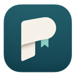

PaperDesk
把文献带回阅读空间
FOR MAC
从浏览器，继续阅读
收下这份 PDF。
导入本地书库，接着高亮、做笔记，
或与模型讨论当前页面。
没有找到 PDF。请打开 PDF 页面，或在 PDF 链接上右键选择「导入 PDF 到 PaperDesk」。
导入到 PaperDesk
↗
取消传输
首次使用 · 连接 Mac 应用
在 PaperDesk 菜单中打开「Chrome 扩展」。
点击「启用连接」，再加载此扩展。
回到 PDF 页面，点击「导入」。
检查连接